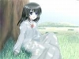

Ghostly Affection
circle
tarupitoの同人サークル活動について
現在、 Ghosts Fuck ! , capriccio suite にて活動中です。
Ghosts Fuck ! について / capriccio suite について
Ghosts Fuck ! について
tarupito個人サークル。2002年より活動開始。
月姫 ( TYPE-MOON ) 二次創作漫画に始まり、その後オリジナル小説や後述のcapriccio suiteの委託販売・宣伝など。
参加イベント : Comic Market 63 , 65 , 68 , 71 ...etc.
次回作・次回参加イベントは未定。
作品紹介は準備中です。
capriccio suiteについて
2003年より活動開始。熾仁( taruhito )名義で参加。
ゲーム制作 ( 一般向けオリジナルビジュアルノベル / 吉里吉里使用 )・創作小説ほか。
参加イベント :
Comic Market 68 , 69 , 70 , 71 , 73 , 75 , 76 /
Sunshine Creation 23 , 28 , 31 /
Comic Revolution 36 , 37 ...etc.
次回作・次回参加イベントは未定。
以下、作品紹介

pult -concerto-
2003.12.30~ / CD-ROM / ￥500 ( 委託販売なし ) / 演出 , 音楽etc. で参加
少年と少女が季節の移り変わりとともに出会い、別れ、再開する様を描いたストーリー。 詳細はこちら
NooN. 〜いつもより少し長かったあの夏の一日〜
2004.10.03~ / CD-ROM / ￥500 ( 委託販売終了 ) / シナリオ(全) , 演出 , ロゴ制作etc. で参加
ある夏の日の放課後、少年は不思議な少女と出会い、彼女の悲しい恋と向き合う。 詳細はこちら
[Re:]
2006.04.23~ / CD-ROM / ￥1000 ( 委託販売終了 ) / シナリオ(1ルート) , 演出 , スクリプトetc. で参加
火事で恋人を失った主人公は、失意の中、時間を戻してくれるという少女と出会う。
心配する幼馴染や妹、友人たちとの交流、彼女にそっくりな女性との出会いなどの中で、主人公は今と過去との自分を選択する。 詳細はこちら
[Re:] precede disc
2005.06.19~ / CD-ROM & 下敷き / ￥200 ( 委託販売終了 ) / 演出 , スクリプトetc. で参加
[Re:]の先行版として1ルートを収録。
[Re:] summer landscape
2006.08.13~ / CD-ROM / ￥300 ( 委託販売なし ) / 演出 , スクリプトetc. で参加
[Re:]のアフターストーリーを収録。 星に願いを / 言葉の意味 / クラシカルライフ
pult -concerto-
outline
オーケストラでは、弦楽奏者は通常二人組で一つの譜面を見る。
そのペアーをプルトと呼び指揮者に近い方から第一プルト、第二プルトと数える。
物語は第一プルト、第二プルトとして真二、玲菜の二つの視点が交互に描かれて進んでいく。
story
二人の心は動き始めた。
まるで協奏曲 -concerto- を奏でるかのように
高校３年の夏
それぞれ、将来への道を考える頃。
鳴瀬真二、佐伯玲菜
ある出来事をきっかけに二人は出逢い
物語は動き出す。
果たして、二人が迎える結末はハッピーエンドか、それとも…。
staff
企画・原案 : kou.ta シナリオ : kou.ta 演出 : 熾仁 スクリプト : 抹茶公園 / 禿侍 音楽 : 熾仁 / kou.ta / 餅 背景・CG彩色 : kou.ta ムービー : kou.ta / enta
capriccio suite web site より
NooN. 〜いつもより少し長かったあの夏の一日〜
story
─── 朝の香りに包まれた教室
ボクは夏休みの補習授業に参加していた
いつものように居眠りをして
気付くと、ボクは誰もいない教室にいた
仕方なしに帰宅するため、通い慣れた田舎道を進む
夏風を感じ、足を止めると
そこでボクは少女に出逢った
道案内をするつもりが、いつしか彼女に惹かれ
彼女の｢恋｣に触れることとなる ───
奇妙なことの連続
まるで夢の続きのような
そこにある存在感さえ…
彼女は一体何者なのか
彼女は何のためにボクの前に現れたのか
彼女はなぜ ───
真夏の正午
夢と約束と…想いが重なる時
彼らの夏はゆっくりと止まる ───
download
デモムービー :
こころんにあるみらー ,
WindFriction
staff
企画・シナリオ : 熾仁 原画 : 形見心太 音楽 : aL 彩色・ムービー : kou.ta スクリプト : 抹茶公園 デバック : 禿侍


capriccio suite web site より
[Re:]
story
ずっと一緒だと誓った存在は、
しかし、手からこぼれて消えた。
果たして、今、何が残されたのか。
主人公、冬弥は高校を卒業し、周りの仲間と一緒に大学生になった。
しかし、大学生活にも慣れてきた冬、火災事故に遭う。
夏美を失い、自分自身も精神的な傷を負った。
今はこの悲しみを忘れたい。
全てを忘れたい。
こんな世界、キエテシマエバイイ。
失意のままに、年が明けても元の生活に戻る事ができなかった。
あてもなく街を歩き続けた。
ふと気がつくと、いつかの公園にいた。
夏美とよく過ごした公園。
しかし、そこはどこか違っていた。
そこは、公園であって公園じゃなかった。
冬弥を心配し、一生懸命になる春稀
事故を境に、行き違いになり、あまり話さなくなった妹の雪華
図書館で出逢った、何かを心に抱いている穂波
季節は冬から春に変わろうとした時
物語は動き始める
冬弥はもう一度、
生きようとする気持ちを取り戻せるのだろうか
product list
web体験版 / デモムービー :
こころんにあるみらー ,
WindFriction ,
Xgame Electronic Station
special
before story 「ユキバナ」 ( 他のストーリーは公式サイトにて )
staff
企画 : kou.ta シナリオ : kou.ta / 熾仁 原画 : 形見心太 音楽 : aL 彩色 : kou.ta スクリプト : 熾仁 / 抹茶公園 デバック : 禿侍
主題歌 ボーカル : 坂崎真央 / 鈴木ななこ 作曲・編曲 : aL 作詞 : kou.ta


capriccio suite web site より